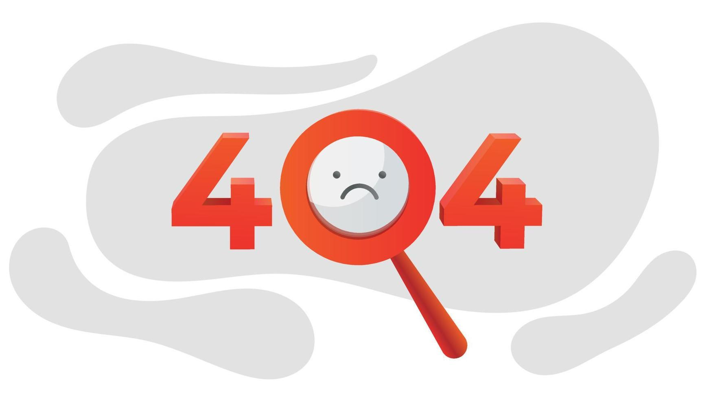

<ion-header>
  <ion-toolbar>
    <ion-title>Error 404: No se encontró la página</ion-title>
  </ion-toolbar>
</ion-header>

<ion-content class="fondo-error404">
  <!--  -->
  <h1>
    No encontramos la página, pero ten un pokémon
  </h1>
  <ion-img src="{{pkmn_img}}" class="pkmn"></ion-img>
  <h2> Nombre: {{pkmn_nm}} </h2>
  <h2>
    Tipo: <span *ngFor = 'let t of pkmn_type'>  {{t.type.name}} </span>
  </h2>
  <ion-button routerLink="/login" expand="block" class="ion-margin-top">
    Volver al inicio
  </ion-button>
  <!--<h1>error404</h1>-->
</ion-content>